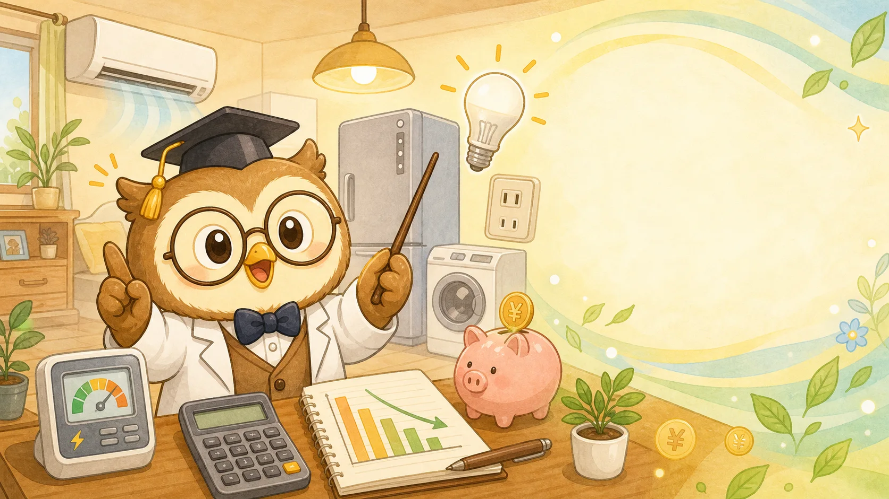

1. 電気代が高いときに最初に見るポイント
電気代が高いと感じたとき、最初にやりがちなのは「とにかく電気を消す」「エアコンを我慢する」といった節電です。もちろん無駄な電気を使わないことは大切ですが、やみくもに我慢しても効果が小さいことがあります。なぜなら、電気代は一つの家電だけで決まるのではなく、複数の要素が組み合わさって決まるからです。
まず確認したいのは、前月や前年同月と比べて「使用量」が増えているのか、それとも「単価」が上がっているのかです。使用量が増えているなら、家電の使い方や季節要因を見直す余地があります。一方で、使用量があまり変わっていないのに請求額だけ増えている場合は、電気料金の単価や燃料費調整額、再エネ賦課金などの影響を受けている可能性があります。
- エアコン・冷蔵庫・照明など、長時間使う家電の影響が大きい
- 燃料費調整額や再エネ賦課金など、電気料金の単価が上がることもある
- 古い家電は同じ使い方でも消費電力が大きくなりやすい

また、電気代の節約では「小さな節約をたくさん積み上げる」よりも、「影響が大きい家電から順番に見直す」方が効果を実感しやすいです。たとえば、スマホの充電器をこまめに抜くことも無駄ではありませんが、エアコン・冷蔵庫・照明・乾燥機のように使用時間が長い家電の方が、家計への影響は大きくなりやすいです。
2. 電気代の基本式を理解しよう
電気代を考えるときは、まず基本式を知っておくと便利です。細かい料金体系は電力会社によって異なりますが、家電ごとの電気代はおおむね次の考え方で計算できます。
消費電力（kW） × 使用時間（時間） × 電気料金単価（円/kWh） = 電気代
たとえば、消費電力が1,000Wの家電を1時間使う場合、1,000Wは1kWなので、電気料金単価が31円/kWhなら約31円です。これを毎日3時間使うと、1日約93円、30日で約2,790円になります。こうして数字にすると、「この家電は思ったより高い」「これは気にしすぎなくてよい」と判断しやすくなります。
| 家電 | 目安の消費電力 | 1時間の電気代目安 | 見直し優先度 |
|---|---|---|---|
| エアコン | 500〜1,500W | 約16〜47円 | 高 |
| ドラム式乾燥 | 800〜1,200W | 約25〜37円 | 高 |
| 電子レンジ | 1,000〜1,500W | 約31〜47円 | 中 |
| 冷蔵庫 | 常時稼働 | 月数百〜千円台 | 高 |
| LED照明 | 5〜15W | 約0.2〜0.5円 | 低〜中 |
ここで大切なのは、「消費電力が大きい家電」と「長時間使う家電」は別だということです。電子レンジは消費電力が大きいですが、1回の使用時間は短いことが多いです。一方で冷蔵庫は常に動いているため、1時間あたりは小さく見えても、年間では大きな差になります。
3. 家電別の節約ポイント
電気代を下げるには、家電ごとに効きやすい対策を知っておくことが大切です。同じ「節電」でも、エアコン・冷蔵庫・照明・洗濯乾燥機では効果の出方が違います。ここでは家庭で見直しやすい家電を順番に整理します。
エアコン：我慢よりも効率を上げる
電気代の節約で最も注目されやすいのがエアコンです。ただし、夏や冬にエアコンを我慢しすぎると、熱中症や体調不良につながることがあります。大切なのは、使わないことではなく、効率よく使うことです。
フィルターの掃除、室外機まわりの風通し、カーテンや断熱シートの活用、サーキュレーターとの併用などで、同じ快適さでも消費電力を抑えやすくなります。設定温度を極端に変えるより、部屋の熱を逃がさない工夫をする方が続けやすいケースも多いです。
- エアコンは設定温度を1度見直すだけでも差が出る
- フィルター掃除で効きが悪くなるのを防ぐ
- サーキュレーターで空気を循環させる
冷蔵庫：365日動くから小さな差が効く
冷蔵庫は、家庭の中でも長時間使う家電です。頻繁に買い替えるものではありませんが、古い機種は消費電力が大きい場合があります。冷蔵庫の節電では、詰め込みすぎないこと、開閉時間を短くすること、壁から適度に離して放熱しやすくすることが基本です。
- 冷蔵庫は詰め込みすぎと開閉回数を減らす
- 熱いものは冷ましてから入れる
- 冷蔵庫の周囲に放熱スペースを作る
照明：LED化はわかりやすく効果が出やすい
白熱電球や古い蛍光灯を使っている場合、LED化は効果がわかりやすい対策です。特にリビングやキッチンなど、点灯時間が長い場所から優先するとよいでしょう。すでにLEDを使っている場合は、消し忘れを減らす、明るさを必要以上に上げない、といった管理が中心になります。
- 照明はLED化、待機電力はタップでまとめて切る
- 長時間つける部屋から優先して見直す
- 人感センサーやタイマーも場所によっては有効
洗濯乾燥機・浴室乾燥：便利さとコストを分けて考える
乾燥機能は便利ですが、使用時間が長くなりやすい家電です。毎日使う場合は月額への影響が大きくなります。もちろん、家事の時短や花粉対策などの価値もあるため、単純に「使わない方がよい」とは言えません。大切なのは、いくらかかっているかを把握したうえで使うことです。
たとえば、乾燥1回に50円かかるとして毎日使えば、1か月で約1,500円です。これを高いと感じるか、時短代として納得できるかは家庭によって違います。数字にしてから判断しましょう。
4. 季節ごとの電気代対策
電気代は季節によって大きく変わります。特に夏と冬はエアコンの使用時間が増えるため、春や秋と比べて請求額が上がりやすいです。季節ごとの特徴を知っておくと、「今月だけ高い」のか「使い方を見直すべき」なのか判断しやすくなります。
夏：冷房効率を上げる
夏の電気代対策では、日差しを室内に入れすぎないことが重要です。遮光カーテン、すだれ、断熱フィルムなどで室温の上昇を抑えると、エアコンの負担を減らせます。帰宅直後に部屋が暑い場合は、まず換気して熱気を逃がしてから冷房を入れると効率的です。
冬：暖房と断熱をセットで考える
冬は外気温との差が大きく、暖房の電気代が上がりやすい季節です。暖房器具を強くする前に、窓や床から熱が逃げていないか確認しましょう。厚手のカーテン、ラグ、窓の断熱シートなどは、比較的低コストで取り入れやすい対策です。
梅雨・花粉の時期：乾燥機能の使い方を決める
梅雨や花粉の時期は、室内干しや乾燥機の使用が増えます。乾燥機能を使う日と自然乾燥の日を分ける、除湿機とサーキュレーターを組み合わせる、洗濯物の量を詰め込みすぎないなど、使い方を決めておくと電気代を管理しやすくなります。
5. 家電の買い替えは本当に得か
電気代を下げる方法として、家電の買い替えも候補になります。特に冷蔵庫、エアコン、照明、洗濯乾燥機などは、省エネ性能の差が電気代に出やすい家電です。ただし、買い替えには本体代がかかるため、「電気代が下がるからすぐ得」とは限りません。
買い替えを考えるときは、年間でいくら電気代が下がるか、何年使えば本体代を回収できるかを確認しましょう。たとえば、新しい冷蔵庫に買い替えることで年間8,000円の電気代が下がるとして、本体価格が10万円なら、電気代だけで回収するには12年以上かかります。一方で、故障リスクや使いやすさ、容量、静音性なども改善するなら、総合的には買い替える価値があるかもしれません。
| 買い替え候補 | 確認ポイント | 判断の目安 |
|---|---|---|
| 冷蔵庫 | 年式・年間消費電力量 | 10年以上前なら比較価値あり |
| エアコン | 部屋の広さと能力が合っているか | 効きが悪いなら点検も検討 |
| 照明 | LED化できているか | 長時間使う場所から交換 |
| 乾燥機 | 使用頻度と時短効果 | 電気代だけでなく家事負担も見る |
6. 電力会社や契約プランの見直し
家電の使い方を見直しても電気代が高い場合は、電力会社や契約プランを確認する価値があります。電力自由化以降、地域やライフスタイルによって選べるプランが増えています。日中に家にいる家庭、夜間の使用が多い家庭、オール電化の家庭などでは、合うプランが変わることがあります。
ただし、比較するときは「基本料金が安い」「ポイントが付く」だけで判断しないようにしましょう。使用量が多い月に単価がどうなるか、燃料費調整の扱い、解約条件、キャンペーン終了後の料金も確認することが大切です。
- 現在の契約アンペア・基本料金を確認する
- 月別の使用量を見て、夏冬だけ高いのか通年で高いのか確認する
- キャンペーン後の通常料金も見る
- オール電化や夜間利用が多い家庭は専用プランも比較する
7. 電気代を計算する具体例
ここでは、実際に電気代をざっくり計算してみます。正確な金額は家電の性能や電気料金単価によって変わりますが、考え方を知っておくと、節約効果を見積もりやすくなります。
例1：エアコンを1日8時間使う場合
消費電力を700W、使用時間を1日8時間、電気料金単価を31円/kWhとします。700Wは0.7kWなので、1日の電気代は次のように考えます。
0.7kW × 8時間 × 31円 = 約174円/日
約174円 × 30日 = 約5,220円/月
実際のエアコンは常に最大出力で動くわけではないため、この金額より低くなることもあります。ただ、長時間使う家電は月額への影響が大きいことがわかります。
例2：LED照明を1日6時間使う場合
消費電力を10W、使用時間を1日6時間、電気料金単価を31円/kWhとすると、10Wは0.01kWです。
0.01kW × 6時間 × 31円 = 約1.9円/日
約1.9円 × 30日 = 約57円/月
このように、同じ「1日数時間使う家電」でも、消費電力によって月額は大きく変わります。節電では、細かいところだけを気にするより、影響が大きい家電から見る方が効率的です。
8. 家庭タイプ別の見直し方
電気代の節約方法は、家族構成や生活時間によって向き不向きがあります。一人暮らし、共働き世帯、子育て世帯、在宅勤務が多い家庭では、電気を使う時間帯も家電の種類も違います。自分の家庭に合わない節約を無理に続けると、ストレスの割に効果が小さくなってしまいます。
一人暮らしの場合
一人暮らしでは、部屋数が少ないため電気代の総額は比較的抑えやすい一方、外食やコンビニ利用が多く、家電の使い方が不規則になりがちです。電気代だけを見るなら、エアコンの使い方、照明の消し忘れ、電気ケトルや電子レンジの使用頻度を確認するとよいでしょう。
また、日中に家を空けることが多いなら、冷蔵庫以外の電力は夜に集中しやすくなります。夜間の使用が多い生活なら、契約プランによっては時間帯別料金が合う可能性もあります。ただし、プラン変更で必ず安くなるとは限らないため、過去数か月の使用量を確認してから判断しましょう。
共働き世帯の場合
共働き世帯では、平日の日中は電気使用量が少なく、朝と夜に集中しやすい傾向があります。帰宅後にエアコン、照明、調理家電、洗濯乾燥機を一気に使うと、短い時間に多くの電力を使います。節約だけでなく、家事の時短も大切な家庭では、乾燥機や食洗機を無理にやめるより、使う頻度や時間を決めて管理する方が現実的です。
たとえば、乾燥機は雨の日や忙しい日だけ使う、食洗機はまとめ洗いにする、エアコンは帰宅直後に換気してから入れる、といったルールです。完全にやめる節約は続きにくいので、「使う価値があるものは使う。ただし金額を知って使う」という考え方がおすすめです。
子育て世帯の場合
子育て世帯は、洗濯回数、冷暖房、照明、調理家電の使用が増えやすく、電気代も上がりやすいです。特に乳幼児がいる家庭では、室温管理を優先した方がよい場面もあります。電気代を下げるために冷暖房を我慢しすぎるのはおすすめできません。
子育て世帯では、家電の効率を上げる節約が向いています。エアコンのフィルター掃除、カーテンによる断熱、洗濯物の乾燥時間短縮、冷蔵庫の整理など、快適さを大きく落とさずにできる対策から始めましょう。
在宅勤務が多い家庭の場合
在宅勤務が多いと、パソコン、モニター、照明、冷暖房を日中も使うため、以前より電気代が上がることがあります。特に夏と冬は、仕事部屋だけを効率よく冷暖房できるかがポイントです。家全体を冷やす・暖めるより、作業場所を決めて、その部屋の断熱や空気循環を整える方が効率的です。
パソコンやモニター自体の電気代は、エアコンほど大きくないことが多いですが、長時間使うため積み上がります。使っていないモニターを消す、スリープ設定を見直す、照明を必要な範囲だけにするなど、小さな改善も在宅勤務では効果が出やすくなります。
9. やりすぎ注意の節約
電気代を下げたいと思うほど、極端な節約に走りたくなることがあります。しかし、節約は続けられなければ意味がありません。健康や生活の質を大きく下げる節約は、長期的にはおすすめできません。
冷暖房を我慢しすぎる
夏に冷房を我慢しすぎると熱中症のリスクがあり、冬に暖房を我慢しすぎると体調を崩す原因になります。医療費や仕事・家事への影響を考えると、冷暖房を完全に削る節約は本末転倒になることがあります。設定温度、断熱、空気循環を見直しながら、無理のない範囲で調整しましょう。
便利家電をすべて使わない
乾燥機、食洗機、ロボット掃除機などは電気代がかかりますが、家事時間を減らす価値もあります。たとえば乾燥機に月1,500円かかっていても、毎日の洗濯干し時間が大きく減るなら、家庭によっては十分に価値があります。電気代だけでなく、時間、体力、ストレスも含めて判断しましょう。
安いプランに飛びつく
電力会社の見直しでは、キャンペーンやポイント還元が目立つことがあります。ただし、短期的な特典だけで選ぶと、キャンペーン終了後に思ったほど安くならないこともあります。契約期間、解約条件、通常料金、燃料費調整の扱いを確認しましょう。
10. 電気代チェックリスト
最後に、電気代を見直すときのチェックリストをまとめます。すべてを一度にやる必要はありません。まずは「確認するだけ」で十分です。数字を見える化すると、どこから手をつけるべきか自然に見えてきます。
- 検針票やマイページで、使用量と請求額を分けて確認した
- 前年同月と比べて、季節要因か使い方の変化かを見た
- エアコンのフィルター掃除をした
- 冷蔵庫を詰め込みすぎていないか確認した
- 長時間使う照明からLED化できているか確認した
- 乾燥機や浴室乾燥の1回あたりの電気代を計算した
- 古い家電の年間消費電力量を確認した
- 契約プランやアンペア数が生活に合っているか見直した
- 節約効果が大きそうな家電から順番に試した
このチェックリストを使うと、「何となく節電する」から「効果の大きいところを順番に見る」へ変えられます。電気代は毎月発生する固定費なので、月1,000円下がるだけでも年間12,000円、5年で60,000円の差になります。小さく見える改善でも、長く続けば大きな家計改善につながります。
よくある質問
計算ツールで自分の場合を確認しよう
平均や目安は便利ですが、実際の電気代は、家電の消費電力・使用時間・電気料金単価によって変わります。はかるんツールの電気代計算ツールを使うと、家電ごとの1日・1か月の電気代をすぐに確認できます。
たとえば、「エアコンを1日8時間使うと月いくらか」「ドライヤーを毎日10分使うとどれくらいか」「照明をLEDに変えたらどれくらい差が出るか」といった疑問を、数字で見える化できます。節約は、我慢ではなく判断材料を増やすことから始めるのがおすすめです。
まとめ
- まずは全体像をつかみ、重要な条件を確認する
- 平均ではなく、自分の生活や収入に合わせて考える
- 迷ったら計算ツールで数字にして判断する